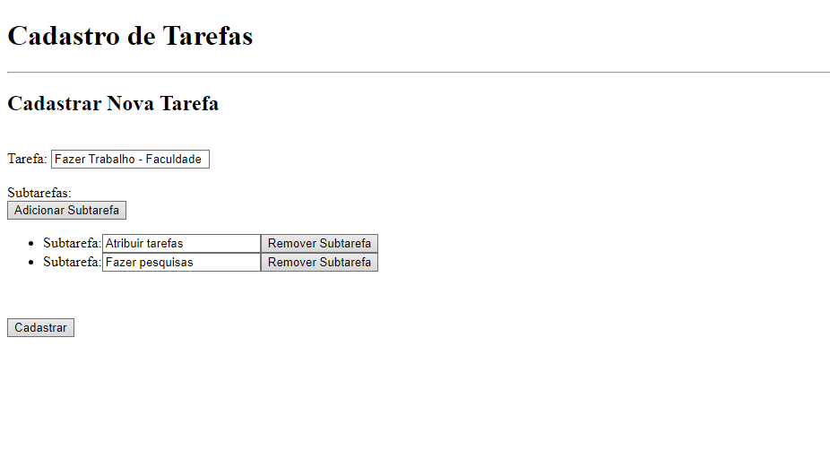

Portfólio
-
Página Produto - Mouse Logitech
- Teconologias Usadas: HTML & CSS
- Link GitHub
-
Algoritmo Para Cadastro de Livros

- Teconologia Usada: Python
- Link GitHub
-
Algoritmo para Cadastro de Tarefas
- Teconologias Usadas: HTML & JavaScript
- Link GitHub
-
Agregador de Links

- Teconologias Usadas: HTML & CSS
- Link GitHub